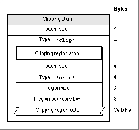

Clipping AtomsClipping atoms specify the clipping regions for movies and for tracks. Figure 4-13 shows the layout of clipping atoms. Figure 4-13 The layout of a clipping atom  You define a clipping atom by specifying these elements: Size. The number of bytes in this clipping atom. Type. The type of the data in this clipping atom (defined by the 'clip' atom type). Clipping region atom. Described in the next section.
Figure 4-13 The layout of a clipping atom

You define a clipping atom by specifying these elements:
'clip'